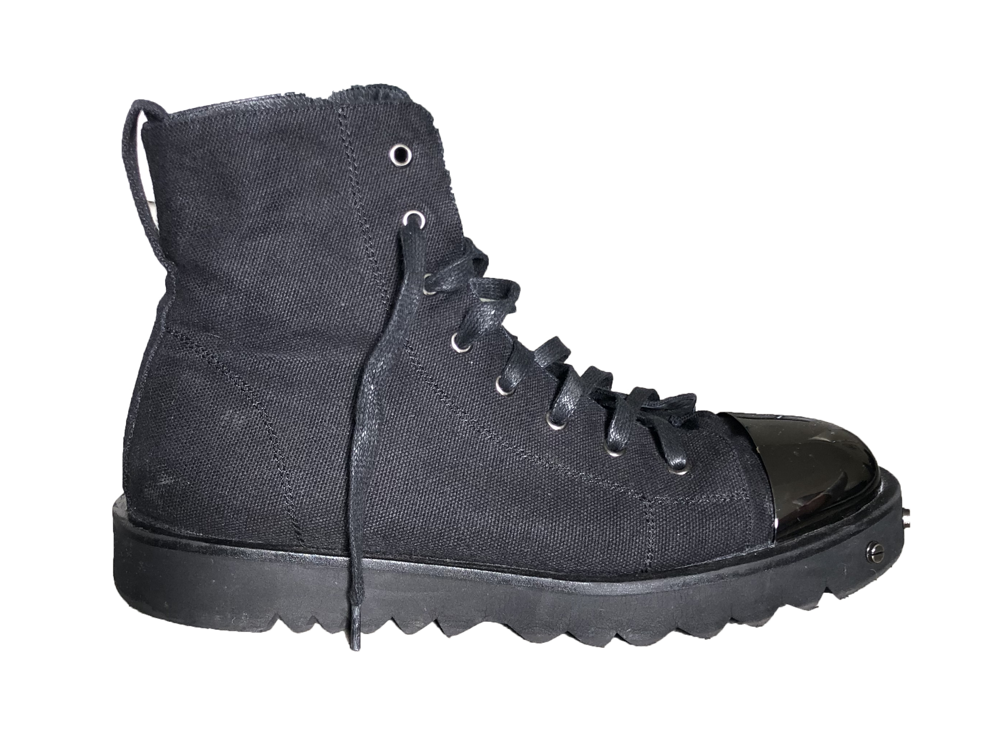
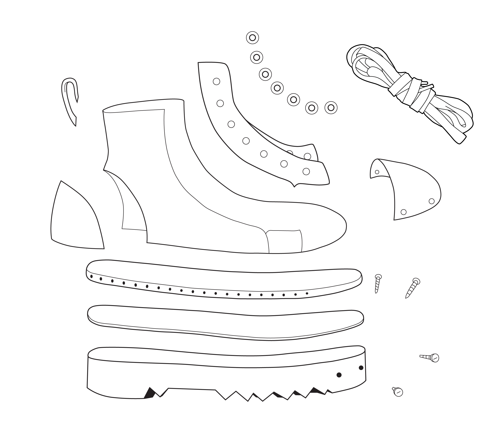

Ben Harkham is a shoe designer who needed a graphic designer’s eye to help keep his production clean and professional. I rendered a shoe sole vector illustration which was used as a blueprint as well as vectorized and cleaned up his logo, production blueprints, and designs that were printed on the shoe box.
2018


More Like This